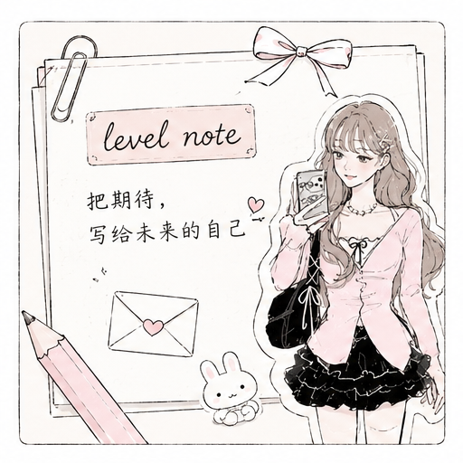
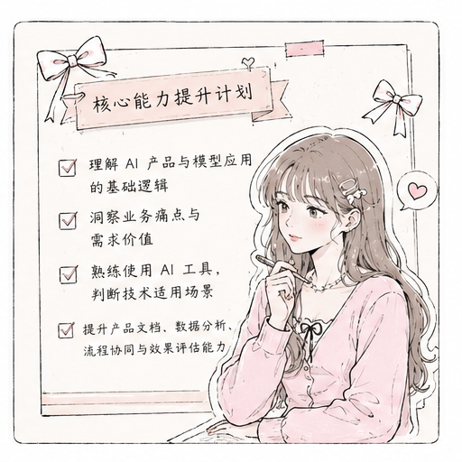
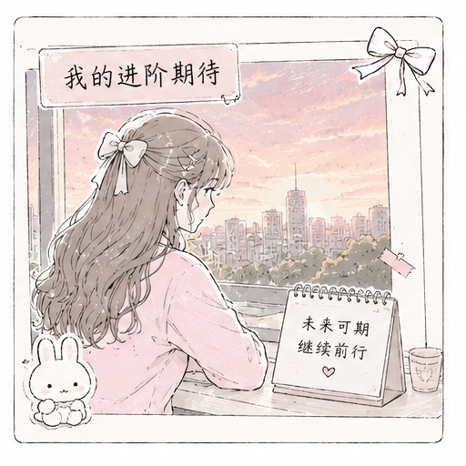

level note
把期待，写给未来的自己
这一页记录的不只是申请心声，也是我对下一阶段成长的认真期待。这一次我申请的是等级 3，也希望以更清晰的产品思维继续向前。
02 / level up
把认真走过的每一步，都变成继续向前的勇气。
level note
这一页记录的不只是申请心声，也是我对下一阶段成长的认真期待。这一次我申请的是等级 3，也希望以更清晰的产品思维继续向前。

level 3 focus
现阶段我更希望自己不只是完成学习任务，而是进一步建立对需求理解、内容策划、协作推进与产品表达的整体认知，让成长方向更贴近 AI 产品经理这一目标。
我也会继续补足 AI 产品所需要的几项核心能力：先系统理解 AI 产品与模型应用的基础逻辑，学会洞察业务痛点与需求价值；在实践中熟练使用常见 AI 工具，判断技术在不同场景中的适用性；进一步提升产品文档撰写、数据分析、流程协同与效果评估能力，为后续参与更完整的产品迭代和创新探索做好准备。

加入起点 AI 工作室以来，我始终认真对待每一次学习机会，积极参与团队组织的各项活动与技能学习，踏实走好每一步成长之路。
在工作室的陪伴与指引下，我不断拓宽眼界，主动参与项目实践与学科竞赛，积累了许多宝贵经验，自身综合能力也得到了很大提升。

如今希望能够顺利通过本次等级 3 进阶升级评定，以此作为自己新的成长起点。往后我也会继续保持初心，虚心学习，不断精进自己，紧跟团队步伐，尽自己所能为工作室贡献一份小小的力量，和大家一起共同进步，一同奔赴更远的前方。